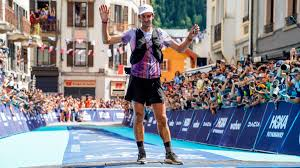
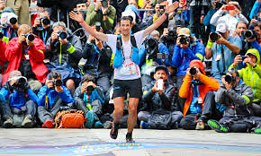

Introduction
Kilian Jornet is widely regarded as one of the best mountain runners in the world. His incredible achievements in trail running and mountain running are a testament to his exceptional skill, endurance, and dedication. Kilian's career is marked by numerous records and victories in some of the most challenging races across the globe.
From conquering the most difficult trails to setting world records, Kilian Jornet has redefined what is possible in the world of mountain running. His commitment to pushing the limits and his innovative approach to training and racing make him a true icon in the sport.
Achievements
- Multiple wins at Ultra-Trail du Mont-Blanc (UTMB)
- Fastest known times on Everest and Kilimanjaro
- Numerous records in vertical kilometers and skyrunning events
| Race/Event | Year | Achievement |
|---|---|---|
| UTMB | 2011, 2012 | Champion |
| Everest | 2017 | Fastest Ascent |
| Kilimanjaro | 2016 | Fastest Ascent |
Learn More
 For more details on Kilian Jornet's career and achievements, visit his official website or his Wikipedia page.